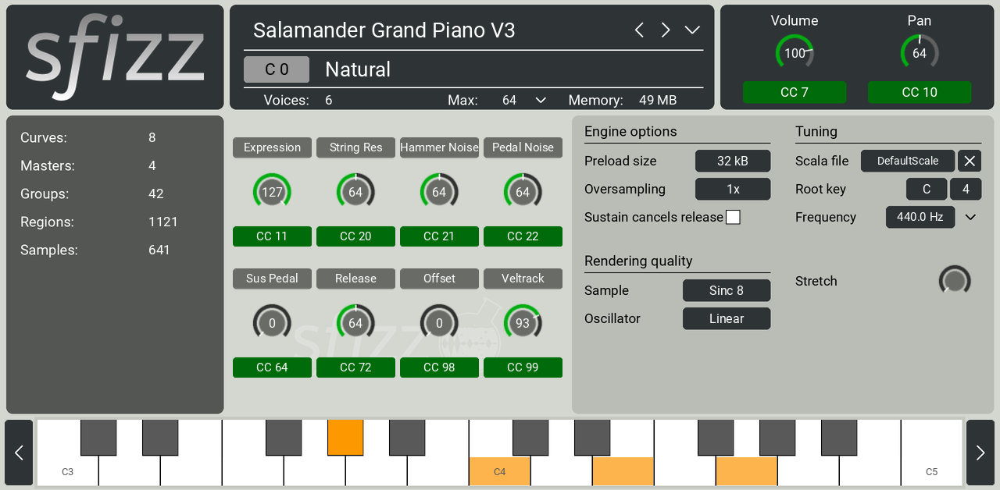
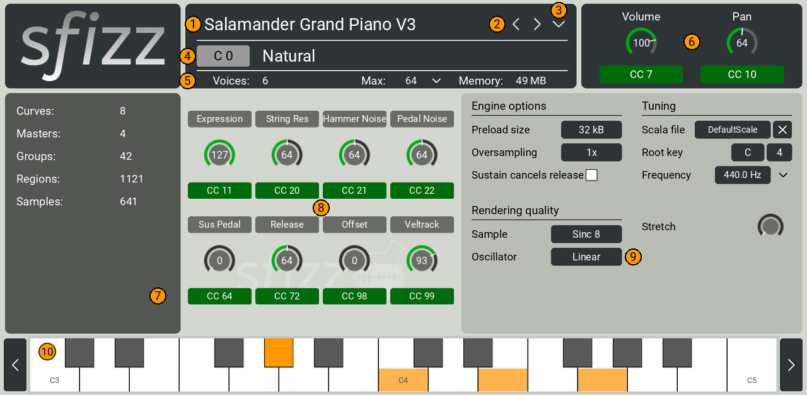
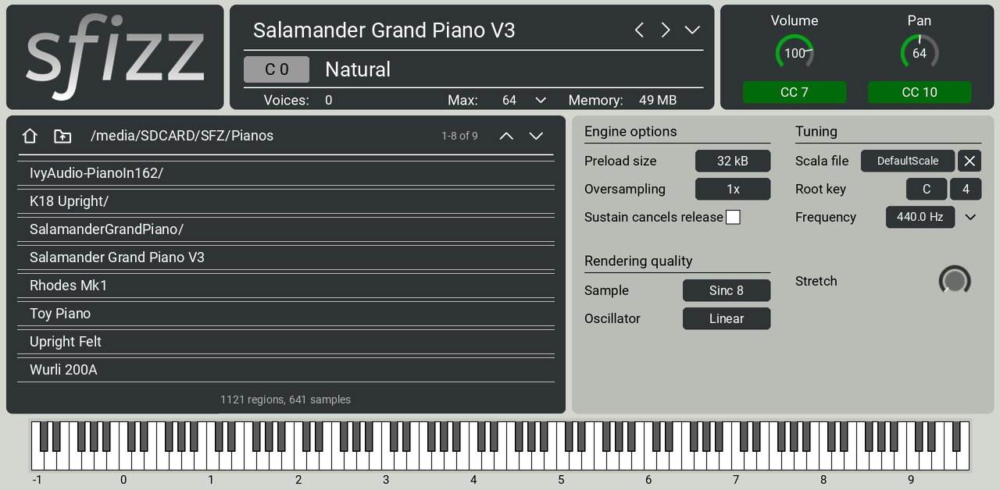

The sfizz 1.2.3 SFZ sampler as a native instrument plugin for Gen1 MPC OS hardware, on a one-page screen modelled on sfizz's own editor. Play SFZ libraries straight from SD cards and USB drives, streamed from disk, with key switches, the instrument's own controls on knobs, Scala tunings and high-quality interpolation.
sfizz-1.0.3-mpc-armv7.zip from the project's GitHub Releases page and unzip it on your computer.scp -r sfizz-1.0.3 root@<device-ip>:/tmp/
ssh root@<device-ip> sh /tmp/sfizz-1.0.3/install.sh
The installer checks the device, asks for confirmation, stops MPC (save your project first), copies the plugin
folder to /sdcard/Synths/sfztools - VST - sfizz/, backs up MPC.settings, adds sfizz to MPC's
plugin list and starts MPC again. -y skips the question; -t <folder> installs into another
Synths folder (for example on a card). Running it again upgrades in place.
The zip's INSTALL.md lists the manual steps: copy the plugin folder, stop MPC, back up and edit
MPC.settings, start MPC.
ssh root@<device-ip> sh /tmp/sfizz-1.0.3/uninstall.sh
This removes the plugin folder and its plugin-list entry, and restarts MPC. SFZ files you put in the plugin's
sfizz/Instruments folder are kept. Projects that used sfizz load without it.
.sfz file next to its samples
folder) and insert it. A good free one: Salamander Grand Piano V3 (github.com/sfzinstruments/SalamanderGrandPiano)..sfz file. The name, counts and memory update when it has loaded.sfizz's desktop editor has four tabs. On the MPC they are side by side on one page: the header, then Information, Controls and Settings, then a keyboard you can play.

.sfz). Shows Loading… while loading.
sfizz/Instruments folder),
every SD card and USB drive, and sdcard (the internal storage)./) to open it, and the folder-up button to go back. A tap acts
once: a second touch within a third of a second of a folder opening is ignored, so one tap never opens two
things..sfz file
finds its samples by their path relative to it./sdcard/Synths/sfztools - VST - sfizz/sfizz/Instruments/. The
installer keeps this folder when you upgrade or uninstall.sfizz reads the start of every sample into memory (the preload) and streams the rest from disk while you play. A large library can take several seconds to load from a card. The plugin is silent while it loads; notes played during a long load are skipped.
sfizz supports SFZ v1 and v2 and many ARIA extensions (key switches, CC curves, release triggers, crossfades, effects). Opcodes it doesn't support are ignored, as on the desktop.
| Bank | Q-Links |
|---|---|
| Bank 1 | Volume, Pan, Controls 1–6 |
| Bank 2 | Controls 7–8, Frequency, Stretch, Sample quality, Oscillator quality |
A Q-Link on an empty Controls slot does nothing. Settings that reload samples (Max voices, Oversampling, Preload size) are not on Q-Links, so a turn can't interrupt playing.
sfizz lists the MIDI controllers the instrument uses. The panel shows up to eight of them: first those the instrument
names (its label_cc lines), then the others by number. CC 7 and CC 10 are left out because they are the
Volume and Pan knobs. A controller that doesn't fit still works from MIDI.
| Setting | Values (default in bold) | What it does |
|---|---|---|
| Max (voices) | 1, 2, 4, 8, 16, 32, 64, 96, 128, 160, 192, 224, 256 | How many voices can sound at once. Lower it if the device runs out of CPU with dense playing. |
| Volume | 0–127 (the instrument's default, often 100) | MIDI CC 7 to the instrument. |
| Pan | 0–127 (64, centre) | MIDI CC 10 to the instrument. |
| Preload size | 4, 8, 16, 32, 64, 128, 256 kB | How much of each sample sfizz keeps in memory; the rest streams from disk. Raise it if a slow card makes note starts drop out; lower it to save memory. Changing it reloads the samples. |
| Oversampling | 1x, 2x, 4x, 8x | Upsamples the samples when they load. It can clean up heavily pitched sounds, but multiplies memory and load time. Changing it reloads the samples. |
| Sustain cancels release | Off, On | sfizz's option of the same name: decides whether holding the sustain pedal cancels release samples, as some other SFZ players do. |
| Sample (quality) | Nearest, Linear, Polynomial, Sinc 8, Sinc 12, 16, 24, 36, 48, 60, 72 | How samples are resampled when played at another pitch or sample rate. Higher is cleaner and costs more CPU (section 10). |
| Oscillator (quality) | Nearest, Linear, High, Dual-High | The same for sfizz's built-in
waveforms (*sine, *saw and wavetables). |
| Scala file | DefaultScale (equal temperament), files in sfizz/Scales | Tap to step to the next scale; × goes back to equal temperament. |
| Root key | note C · octave 4 | The key the scale starts on (C4 = MIDI note 60). |
| Frequency | 300–500 Hz (440.0) | Tuning of A4. Drag the value or turn its Q-Link; the ⌄ next to it picks a historical pitch (Baroque 415, French Law 435, European 442 …). |
| Stretch | 0–100% (0) | Piano-style stretch tuning: octaves widen towards the ends of the keyboard. |
sfizz tunes with Scala (.scl) files, a common format for microtonal and historical scales; thousands are
freely available online.
.scl files to /sdcard/Synths/sfztools - VST - sfizz/sfizz/Scales/.The new scale list is read when you step, so files copied while MPC runs show up without a restart.
A saved project keeps, for each sfizz instance: the instrument file, the Scala file, every setting, and the positions of the Volume, Pan and Controls knobs. When the project loads, the instrument loads again in the background.
/sdcard, up to four folders
deep, and loads the first it finds.The Gen1 MPC's processor is shared by every track and plugin. What costs CPU in sfizz, from most to least:
Loading samples while you play. Desktop sfizz reads the whole rest of a sample file the moment a key is hit, on a high-priority thread, and keeps it in memory with no limit; on the MPC that briefly maxed out the processor on every note with large libraries, and long sessions of chords could run out of memory. This port reads files gradually instead, a little ahead of what is playing, at normal priority, within a memory budget (a third of the memory free when the plugin starts, between 48 and 384 MB). Files no note uses are released after a few seconds. If the budget runs out (very many long notes at once), the notes that have played longest fade out quickly, as when sfizz runs out of voices, so new notes always sound. The sound is otherwise exactly the same.
Why Sinc 8 is the default: in offline measurements it removed about 24 dB of interpolation distortion compared with sfizz's desktop default (Polynomial) on bright samples pitched down, for a small extra cost. sfizz keeps samples in 32-bit float, so 24-bit libraries keep their full depth.
| Problem | What to do |
|---|---|
| sfizz isn't in the plugin browser | Run install.sh again and let MPC restart. Check the device is
Gen1 and on MPC OS 3.x. |
| The screen is empty or wrong | MPC OS 2.x can't read this skin: update to 3.x. |
| An instrument loads but some notes are silent | Samples are missing: copy the whole instrument folder, keeping
its layout. Check that sample file names match the .sfz exactly. |
| "Could not load …" | The .sfz couldn't be read or parsed. Try it in sfizz on a computer. |
| "No SFZ files in …" after ‹ › | The folder has no .sfz files at its top level; open a subfolder with the browser. |
| A card doesn't appear in the browser | Insert it before opening the browser, then tap ⌂ to refresh the list. |
| A Controls knob is missing | The panel shows eight controllers; the others still work from MIDI. |
| Silence for a moment after changing Max, Oversampling or Preload size | Expected: these reload the engine. |
| Long held notes end early while playing many keys with a big library | The sample memory budget is full (it is set from the memory free when the plugin starts): the oldest notes give way to new ones. Close other memory-hungry plugins or unload unused project samples, then reload the project; or lower Max voices. |